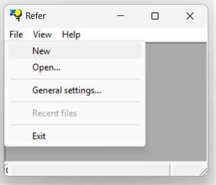
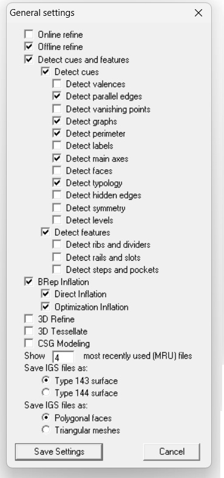
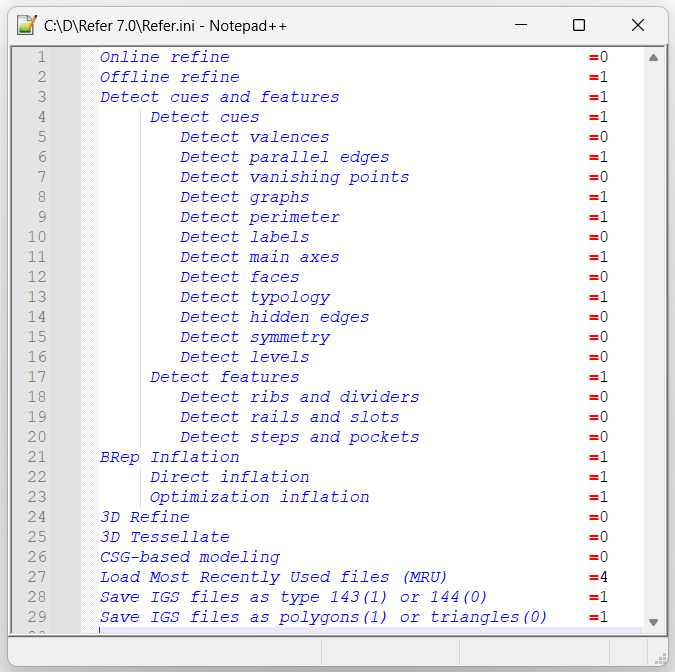

1.5.4.2 General Settings
If the Main Toolbar is not available, you can find the corresponding commands by clicking File in the menu bar:
Note that, because the menu is context-dependent, commands are only visible when the corresponding actions are available.
The menu bar provides access to the General Settings—not available from the toolbar—which allows users to customize the default execution flow of the application, so the system can be adapted to the particular style of each user and reduce the need for interaction. The number of "Most Recently Used (MRU)" files provided through the menu can also be configured through this dialog, as much as the type of entities used to output IGES files.

The application must be relaunched for some changes to take effect. General settings are saved in the REFER.ini file.
The settings file Refer.ini is automatically generated the first time REFER is executed and updated every time a user saves their settings. The file can also be edited directly with any text editor.
